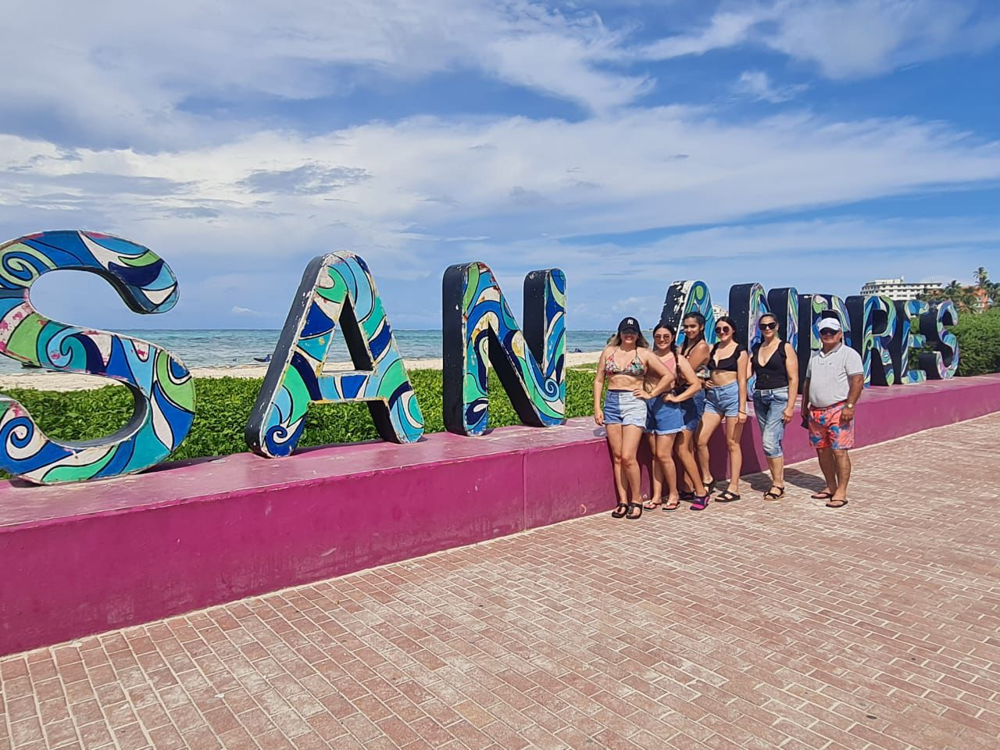

Galería de Imágenes
En familia decidimos viajar a San andres ya que es una isla muy bonita y no habíamos tenido la oportunidad de ir todos.
Esa foto fue el primer día en la mañana que decidimos conocer un poco de la isla y disfrutar del mar de los siete colores.

Esta foto es muy especial ya que es en familia y es un muy buen recuerdo que nos hace felices.
Este fue mi paisaje favorito de todo el viaje ya qué teniamos la vista de el mar y me parece muy bonita la foto.

Esta foto la tomamos el último dia de vacaciones en familia, me trae muy buenos recuerdos ya que todos usamoes el mismo traje de baño.